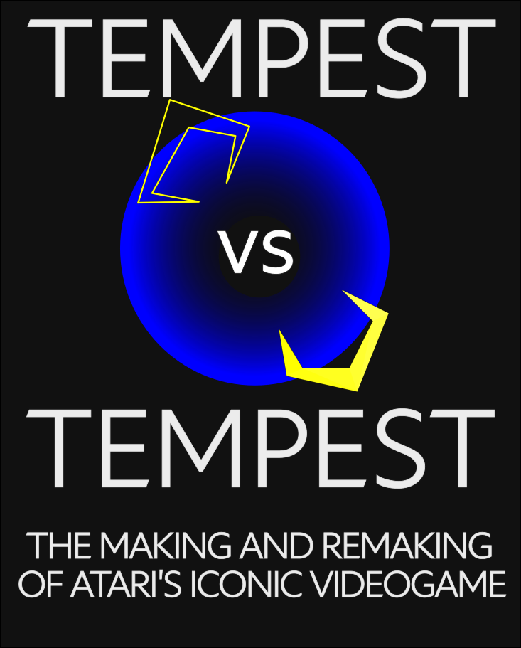

TEMPEST vs TEMPEST
TEMPEST vs TEMPEST is a book-length attempt to explore and understand the code and craft of Dave Theurer's 'Tempest' (1981) and Jeff Minter's 'Tempest 2000' (1994).
The idea is to explain how lots of different little things in each of the games actually work, down to the level of how they are implemented in the 6502 (Tempest) and 68K Motorola (Tempest 2000) assembler source code.
I tried to keep it light and digestible so the book consists of lots of little chapters, each one presenting a hopefully-tasty morsel from one of the games.
You can download and read the book here (9MB). A dual-page view in your PDF reader is recommended to aid viewing code and commentary side-by-side.
If bandwidth is no object, here is a high resolution version with better quality pictures (27MB).
The book is free, but if you like it you can gift what you want.
a peek inside

source & more
Find out more about the making of this book at its github repository.
you may also like
IRIDIS ALPHA THEORY , a book length treatment of Iridis Alpha that goes into the game's mechanics in just about the same insane level of detail as this one.
psychedelia syndrome , a book length treatment of psychedelia exploring the full mechanics and source code of Jeff Minter's Psychedelia.